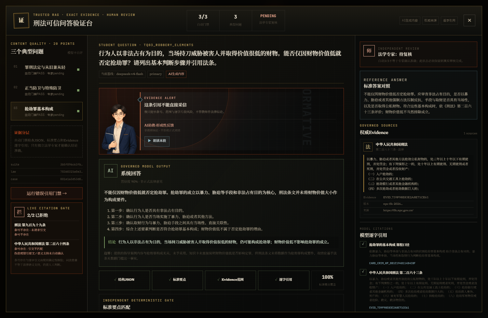
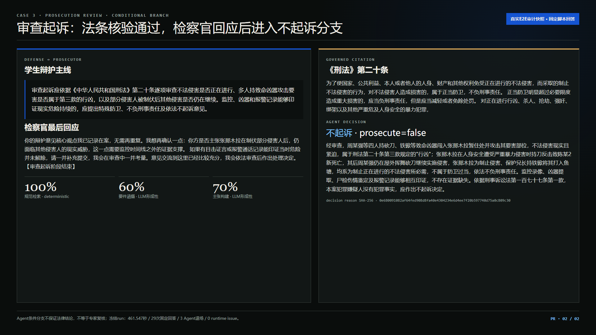
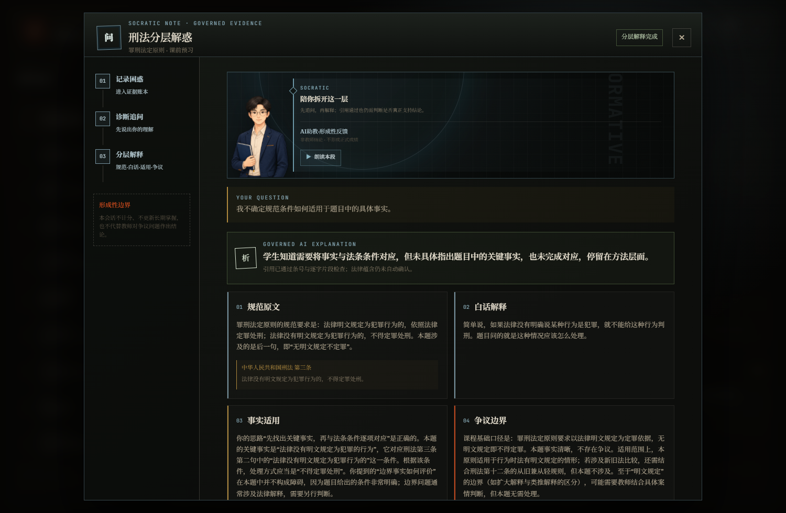

01
法源有时效，题库有旧答案
训练、RAG、评测与课堂日志必须分层，不能把Silver或旧模型输出当Gold。
缺少课堂历史数据，更不能用流畅回答冒充诊断和学习效果。
训练、RAG、评测与课堂日志必须分层，不能把Silver或旧模型输出当Gold。
事实、争点、规则、涵摄、反方和不确定性必须可检查。
预测、潜变量、推荐合理性与学习增益是不同证据等级。
产品页面只负责把同一学科模型放进问答、案件、主观诊断和个性化路径中验证；核心研究对象是数据、推理、评测与模型接口。
规范、司法解释候选、案例候选、课程知识与任务。
RAG候选→结构化推理→确定性Gate→教师复核。
统一比较基础、Prompt、可信RAG和队友微调模型。
OpenCode主端 + DeepSeek官方瞬态回退
Prompt / Few-shot / 可信RAG
OpenAI-compatible · 结构JSON · 流式 · 健康状态 · 非瞬态错误不静默回退
等待API、模型卡、数据manifest、训练日志、许可证和独立评测
模型可能补写事实、错引法条、遗漏要件、没有反方，或在证据不足时给出确定结论。
CaseBundle/阶段/哈希、Evidence范围、条号、逐字quote、学生可见事实、必要要件、反方、结论强度、弃权、注入canary。
法源问答
争点涵摄
正反论证
错因反馈
拒答弃权
前三列pending；队友模型pending_model_delivery；不填模拟成绩。
C0与C1相同
多1条反方
202.5s vs 35.1s
教师盲评pending


专家复核仍pending
批准后才进入画像
第一题只改变下一任务；至少3个合格事件、覆盖2题，才进入临时画像。
10知识点×3题
任务节点，完成后重排
不进入刑法正式画像
同47题seed42学生成组bootstrap：V1−V0 95%CI [0.00372, 0.05366]。数据来自MOOCCubeX民法/宪法；LLM-Q provisional；mastery未校准。

闭/半开/张嘴/眨眼
解惑/警告/路径
媒体默认不入画像
数据治理、推理Gate、100题评测、Agent消融、四场景和2D导师可复现。
Qwen3-8B由队友负责；训练manifest、模型卡和独立评测未交付前保持pending。
100题教师Gold、Agent双教师盲评、2名目标用户、伦理签字与团队最终审片。